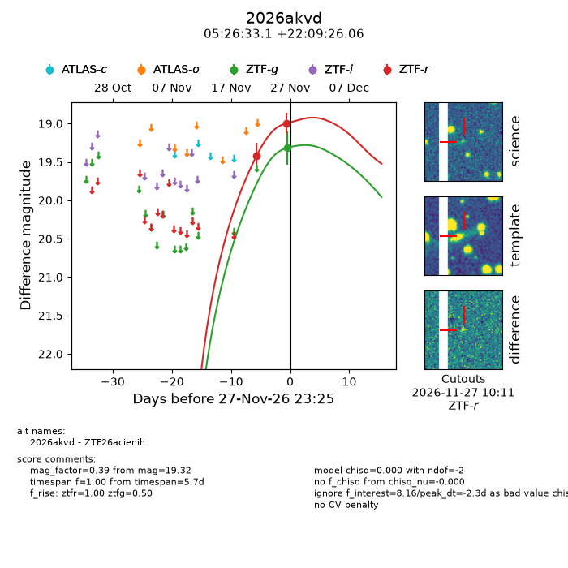
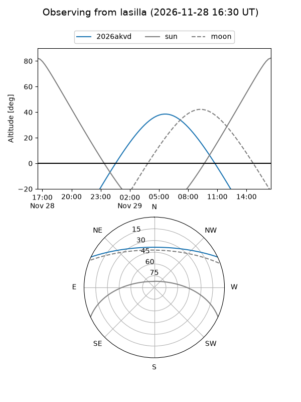
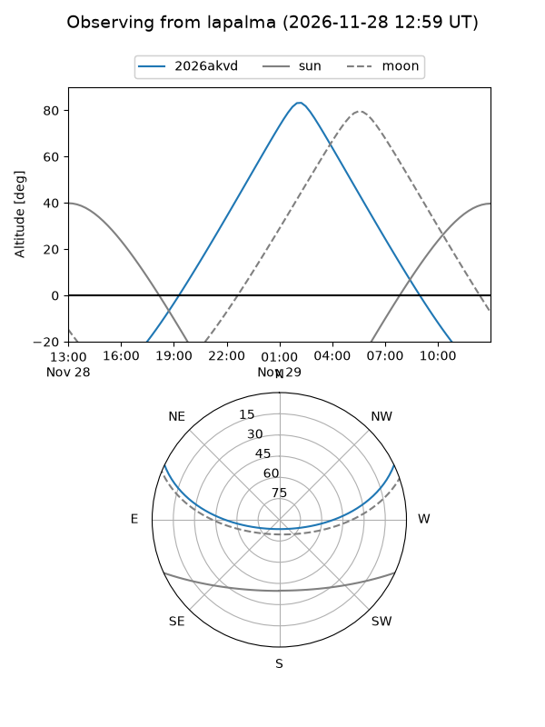
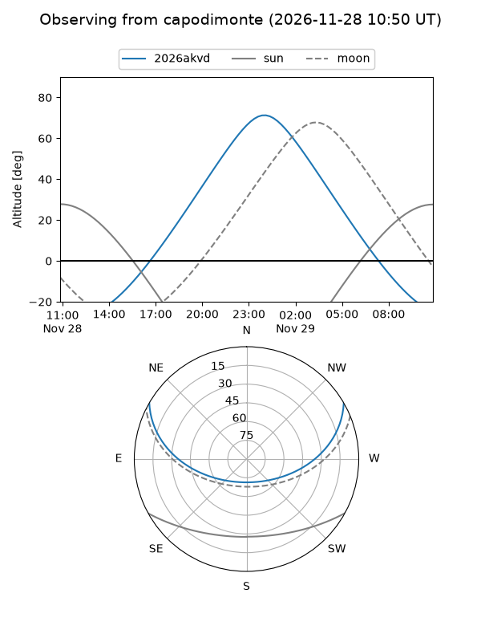
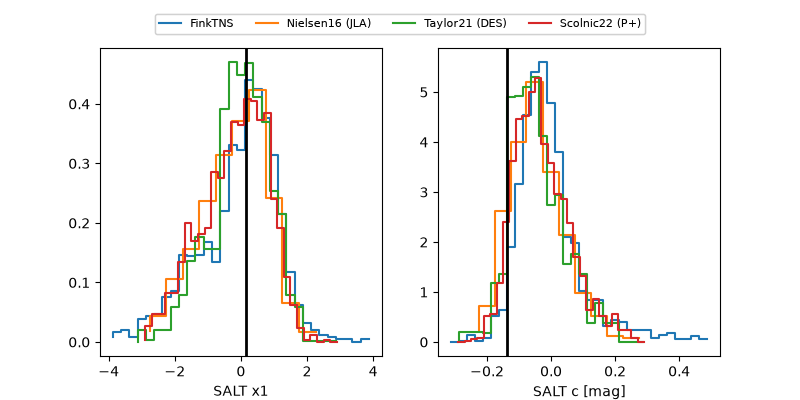

2026akvd
Target 2026akvd at 2026-11-28 11:21
Aliases and brokers:
FINK-ZTF: ztf.fink-portal.org/ZTF26acienih
Lasair-ZTF: lasair-ztf.lsst.ac.uk/objects/ZTF26acienih
ALeRCE-ZTF: alerce.online/object/ZTF26acienih
YSE-PZ: ziggy.ucolick.org/yse/transient_detail/2026akvd
TNS name: wis-tns.org/object/2026akvd
Direct TNS query: direct search
alt names
ZTF26acienih (ztf,fink_ztf)
2026akvd (tns,yse)
Coordinates:
equatorial (ra, dec) = 81.6378,+22.15724
equatorial (HMS+DMS) = 05:26:33.07,+22:09:26.06
galactic (l, b) = (183.4285,-7.26109)
Flags:
peak dt: -1.8
Photometry:
last ztfg=19.32, ztfr=19.00
1 ztfg, 2 ztfr detections
Lightcurve

Visibility



Additional plots
